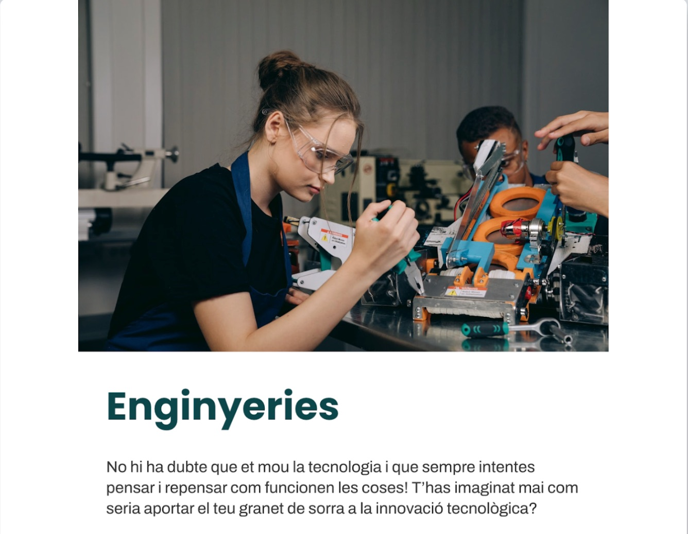
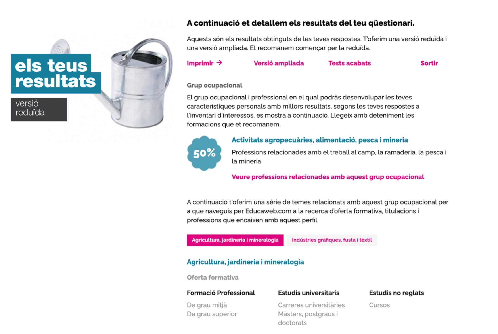
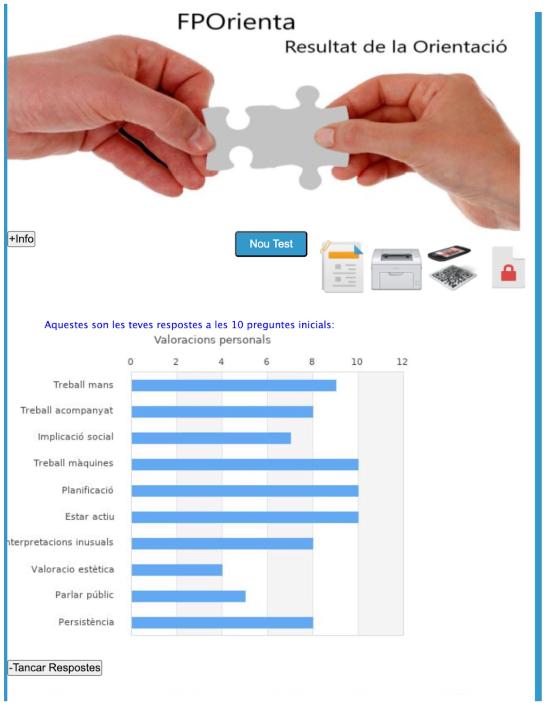
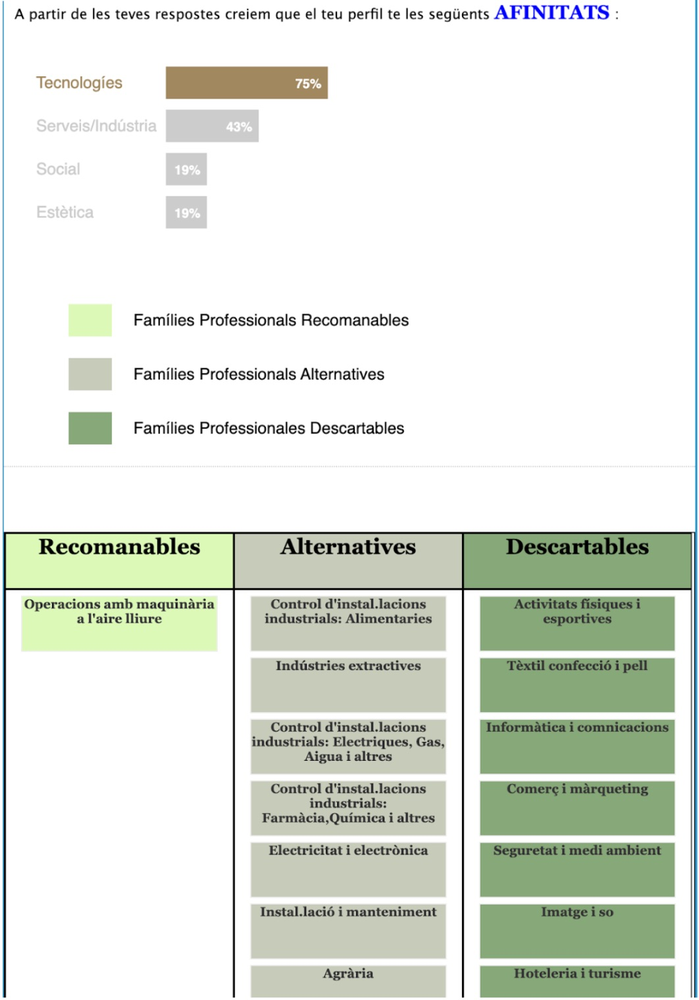
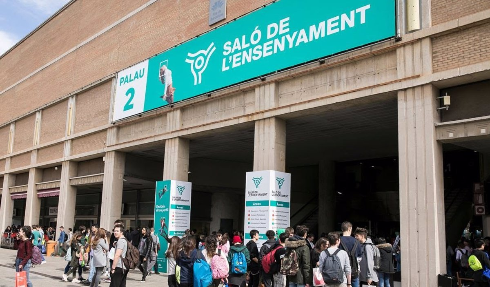
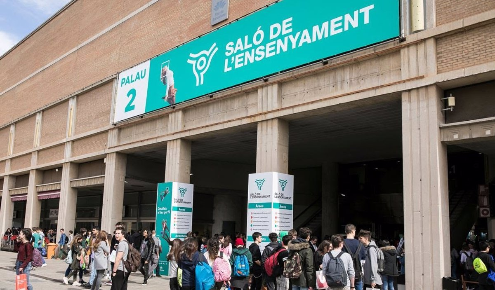

Activitats d'Autoconeixement





Aritz Díaz Parés
Els programadors són els arquitectes del món digital: construeixen ponts de codi que connecten idees amb realitats.
Aquesta sortida em va ajudar a decidir quina universitat escollir per a realitzar els meus estudis. Vaig recopilar molta informació i em vaig decantar per la UPC, degut a l'explicació que em van fer.
 

Grau d'Enginyeria Informàtica
Universitats:
Durada: 4 cursos (240 crèdits / 7000 h)
Preu aproximat:
Aquest currículum és una mostra de com quedaria en un futur si assolís els meus estudis.